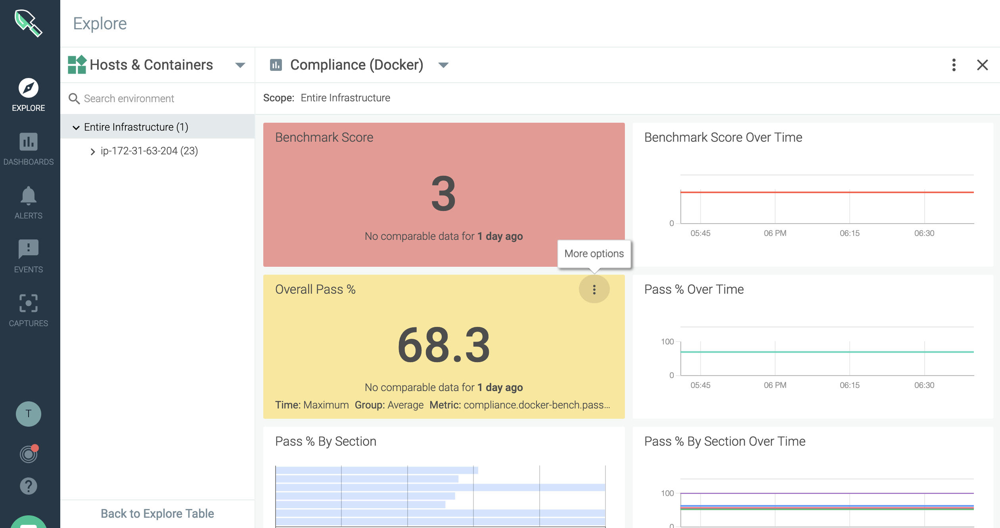
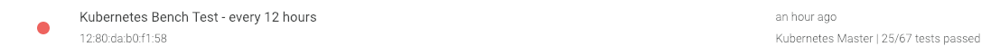

Compliance
The Center for Internet Security (CIS) issues standardized benchmarks, guidelines, and best practices for securing IT systems and environment.
Use the Compliance module of Sysdig Secure to run Kubernetes and Docker CIS benchmarks against your environment.
How Sysdig Compliance Tests Work
CIS benchmarks are best practices for the secure configuration of a target system. Sysdig has implemented these standardized benchmark controls for different versions of Kubernetes and Docker. You run benchmark tests using the provided tools.
Setting up a task
Using a Compliance Task, configure the type of test, the environment scope, and the scheduled frequency of the compliance check. You can also filter how you'd like to view the Results report. See also Understanding Report Filters.
Running a test
Once a compliance task is configured, Sysdig Secure will:
Kick off a check in the agent that runs the compliance task to analyze your system configuration against CIS best-practices
Store the results of this task
Reviewing report results
When a task has been run, it is listed in the Results page and can be viewed as a Report.
 |
Reviewing compliance metrics
Consolidated Compliance metrics can also be viewed in Sysdig Monitor, from default or customized Compliance Dashboards.
|  |
Understanding Report Filters
Customize your view of the test report, e.g. to see only high-priority results or the results from selected controls. (The entire test suite will still be run; just the report contents will be filtered.)
Setting up a Report filter is simple. Under Report on the Compliance Task page:
Choose
Custom SelectionChoose a
benchmark versionandapply a
Profilefilter, and/orselect/deselect individual controls.
 |
Use the information in this section to understand the effect of your selections.
About Custom Selections
Filtering rules apply to the report, not the test itself.
Filtering Rules
Filtering the Report view does not change the scope of the test run.
The full compliance benchmark will be run, but the result view will be edited.
If you apply a filter to an existing task which has already been run, the filter view will be retroactively applied to the historical reports.
If you deselect the filter, the full results will again be visible.
About Benchmark Versions
CIS issues benchmark versions that correspond to – but are not identical with -- the Kubernetes or Docker software version. See the mapping tables, below.
Version Rules
If you do not customize/filter your report, the Sysdig agent will auto-detect your environment version and will run the corresponding version of the benchmark controls.
If you specify a benchmark version, you can then apply a report filter.
If the test version doesn't match the environment version, the filter will be ignored and all the tests will be displayed.
CIS Benchmark Version | Kubernetes Version | Sysdig Report Filter UI | |
|---|---|---|---|
Kubernetes 1.0 | Kubernetes v 1.6 |
| |
Kubernetes 1.1 | Kubernetes v 1.7 | ||
Kubernetes 1.2 | Kubernetes v 1.8 | ||
Kubernetes 1.3 | Kubernetes v 1.1 |

Sysdig also supports Kubernetes benchmark tests for the following distributions:
EKS: Amazon Elastic Container Service for Kubernetes, default cluster version
GKE: Google Kubernetes Engine (GKE), default cluster version
IKS: IBM Kubernetes Service
OpenShift versions 3.10, 3.11
Rancher
CIS Benchmark Version | Sysdig Report Filter |
|---|---|
CIS_Docker_Community_Edition_Benchmark_v1.1.0 | Docker 1.0 |
About Profile Levels
CIS defines two levels of tests, as described below.
In Sysdig Secure, full benchmarks are always run, but you can filter your view of the report to see only top-priority (Level 1 Profile) or only the secondary (Level 2 Priority) results.
From the CIS FAQ:
Level 1 Profile: Limited to major issues
Considered a base recommendation that can be implemented fairly promptly and is designed to not have an extensive performance impact. The intent of the Level 1 profile benchmark is to lower the attack surface of your organization while keeping machines usable and not hindering business functionality.
Level 2 Profile: Extensive checks, more complete
Considered to be "defense in depth" and is intended for environments where security is paramount. The recommendations associated with the Level 2 profile can have an adverse effect on your organization if not implemented appropriately or without due care.
Note
In the Sysdig Secure interface, select
Allto view an in-depth report that includes both Level 1 and Level 2 controls.Select
Level 1to view a report that includes only high-priority controls.Select
Level 2to view a report that includes only the lower-priority controls that are excluded from Level 1.See also: Configure Compliance Tasks.
Get Started
Refer to the pages in this section to begin scheduling compliance tests and reviewing the reported results.
Configure Compliance Tasks
Use a Compliance Task to define:
the type of benchmark test to be run
the scope of the environment to be checked
the scheduled test frequency
the format in which you want to view the results report.
Once a task has been set up, it will run tests automatically on the scheduled timeline. You can also trigger the task manually. See Trigger a Manual Benchmark Test (Run Now).
Schedule an Automated Benchmark Test
Create a Task
From the
Compliancemodule, select theScheduleicon.The
Schedule list(of existing tasks) is displayed.Click +
Add Taskand define the task parameters on theNew Taskpage:
Name:Create a meaningful name.Type:SelectCIS Docker BenchorCIS Kubernetes Bench.Schedule:Choose a frequency and time to run the test.Scope:ChooseEverywhere, or narrow the scope as needed.(See also Grouping, Scoping, and Segmenting Metrics.)
Report: Select how you want to view the test results in the report.
All Tests:means that no filter will be applied to the Report.Sysdig will automatically apply the correct version of the benchmark test for your environment, based on the version of Kubernetes or Docker where the agent is installed.
Custom Selection:means that you will Filter Report Results
Click
Save.
One Task, One Test, One Environment
To run benchmarks on environments with different Kubernetes versions, create a separate task for that scope and version. Sysdig cannot run tests for multiple versions in a single task.
Filter Report Results
Note that the full CIS benchmark test will be run, even when the Report view is filtered. See Understanding Report Filters for more information.
From the
Compliancemodule, select theScheduleicon and either select or create aTask.The
Taskconfiguration page is displayed.
For Report, choose
Custom Selection.Choose the appropriate
CISbenchmark versionfrom the drop-down menu (based on theTypechosen).See About Benchmark Versions for details.
Filter results as desired.
Optional: Choose a
Profile Level(1 or 2).Select
Profile Level 1to view only high-vulnerability results.Select
Profile Level 2to view only the lower-level results that were excluded from Level 1.Select
All(no profile filter) to view complete results.See also: About Profile Levels.
Optional: Select/deselect individual controls as desired.
Optional: Select
Allto clear previous selections and begin again.
Click
Save.
Edit a Scheduled Task
From the
Compliancemodule, select theScheduleicon.The list of scheduled tasks is displayed.
Select a task from the list and edit.
Note
Changing the Report filter settings for a task that has already been run will retroactively filter the existing report views.
Click
Save.
Delete a Scheduled Task
From the
Compliancemodule, select theScheduleicon.On the relevant task, click the
More Options(three dots) icon.
Select
Delete taskand clickYesto confirm (orNoto revert the change).
Trigger a Manual Benchmark Test (Run Now)
Rather than wait for the next scheduled time for a compliance benchmark test to run, users can choose to run a benchmark test manually.
From the
Compliancemodule, select theScheduleicon.On the relevant task, click the
Run Now(arrow) icon.
A notification will state that the test was successfully run.
Return to the
Resultstab and refresh the page after several minutes to see the results..
Trigger a Manual Benchmark Test (Run Now)
Review Compliance Test Results
When you have configured Compliance Task(s) to run benchmark tests, each task run produces a listing connected to a report. This page describes the features associated with the Results list and associated Report pages.
Using the Results List
The Compliance landing page is also the Results list, where each completed result report is linked.
From this page you can:
Access
ReportsCreate/access
Tasksfrom theScheduleiconSearch for
Reportlistings byTaskname from the search barLink to
Dashboardsand their associated metrics in Sysdig Monitor
Note: If a test fails altogether, an error log is listed instead of a Report link.
On Kubernetes tests, the results list will also display the Kubernetes master node, which can be helpful for identification:
|  |
Using the Results Report
Click an entry in the Results list to open the corresponding Results Report.
You can:
Review the
Pass/Fail/Warnresults of each compliance controlCheck remediation suggestions on
Warn/FailresultsDownload the report as a CSV file if needed
|
| ||
Sample Kubernetes Report (See also: https://www.cisecurity.org/benchmark/kubernetes/) | Sample Docker Report (See also: https://www.cisecurity.org/benchmark/docker/) |


Tip
Remember: You may have chosen to filter the Report view to highlight a subset of information.
A filter will apply to ALL relevant listings in the Results page; remove the filter to view the entire test result. See Filter Report Results.
Check Remediation Tips
Remediation tips provide a general summary of what is usually required to resolve an issue. This information is not environment-specific and should be used as a guide, rather than specific configuration instructions.
Access Remediation tips from the Wrench icon next to a Warn or Fail entry in a Report.
 |
Remediation information is included in downloaded CSV reports as well.
Download Report as a CSV File
From a Report page, click Download CSV.
 |
Use Compliance Dashboards and Metrics
Links to the Compliance Dashboards in Sysdig Monitor are provided from the Results list in the Sysdig Secure Compliance module.
Compliance Dashboards
Sysdig provides two pre-built compliance dashboards as part of Sysdig Monitor:
Compliance (K8s)Compliance (Docker)
Sample Docker compliance dashboard:
 |
Sample Kubernetes compliance dashboard:
 |
Compliance Metrics
A number of compliance metrics for both Kubernetes and Docker are available to view in Sysdig Monitor dashboards. These metrics are documented in full in the Metrics Dictionary, and are available here: Compliance.